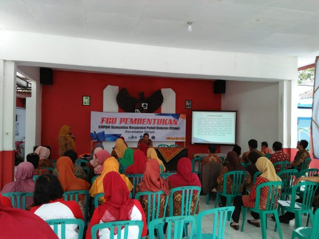
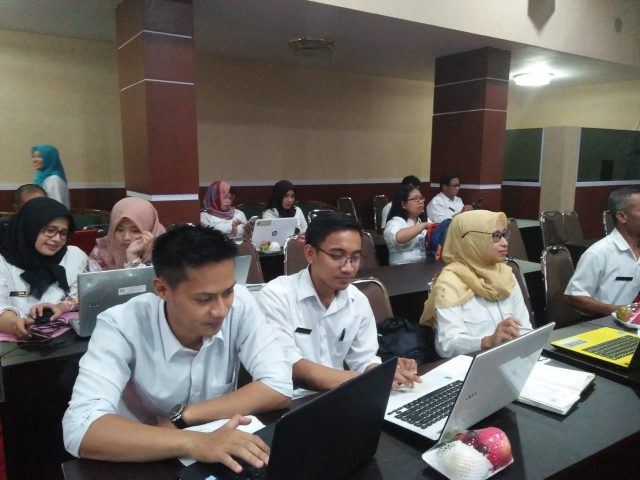

Berita
Kumpulan berita dan agenda terbaru Kecamatan Garum.

KKN UNS Gandeng DLH Kabupaten Blitar untuk Wujudkan Desa Mandiri Sampah di Desa Tingal
Mahasiswa KKN UNS menggelar sosialisasi Desa Mandiri Sampah di Desa Tingal, Kecamatan Garum, untuk meningkatkan kesadaran masyarakat.

Gerakan Serentak Belanja ke Pasar
Pemerintah Kabupaten Blitar bersama Kecamatan Garum mengadakan gerakan belanja ke pasar untuk mendukung UMKM dan pedagang tradisional.

Penanaman Pohon untuk Penyelamatan Sumber Mata Air di Desa Karangrejo
Pemerintah Kabupaten Blitar bersama Dinas Lingkungan Hidup dan PDAM menggelar kegiatan tanam pohon bersama Muspika Kecamatan Garum.

PESTA DEMOKRASI PILKADES SERENTAK 2019
Blitar-Pemerintah Kabupaten Blitar ndue gawe,istilah inilah yang bisa dikatakan penulis untuk Pilkades serentak di Kabupaten Blitar. pada hari Selasa (15/5/2019).

PENDISTRIBUSIAN KOTAK SURAT SUARA PILKADES 2019
Garum-Selamat Pagi dan salam sejahtera buat kita semua, linmas Kecamatan Garum melaporkan pendistribusian Kotak surat suara untuk pilkades serentak diwilayah Kecamatan Garum pada senin(14-10-2019)

Kemeriahan Pasar Murah Kecamatan
Blitar-Pemerintah Kabupaten Blitar menggelar Pasar Murah dalam rangka menyambut Bulan Suci Ramadhan dan Hari Raya Idul Fitri 1440 H/2019 M, pada hari Rabu (15/5/2019), bertempat di Aula Kecamatan Garum.

Patroli Gabungan Ramadhan
Garum-Selamat Pagi dan salam sejahtera buat kita semua, linmas Kecamatan Garum melaporkan giat malam patroli gabungan bersama unsur TNI dan POLRI Kecamatan Garum dalam rangka Menjaga Kamtibmas Kecamatan Garum pada sabtu(11-05-2019)

FGD Pembentukan Komunitas Masyarakat Peduli Diabetes Militus
Garum- Bapak Camat Garum membuka acara Komunitas Masyarakat Peduli Diabetes Militus melalui dinas Kesehatan Kabupaten dan Puskesmas Kecamatan Garum yang bertempat di Pendopo kantor Kecamatan Garum pada hari Kamis(9-5-2019).

Bimtek Admin Web Se-Kabupaten Blitar
Blitar-admin web Kecamatan Garum mengikuti Bimtek peningkatan kapasitas melalui Dinas Kominfo Kab.Blitar bertempat di ruang perdana Jl,sudanco supriyadi no.17 Kota Blitar padad rabu(8-5-2019) Kegiatan Bimtek ini diikuti oleh 22 kecamatan yang ada di wilayah Kabupaten Blitar